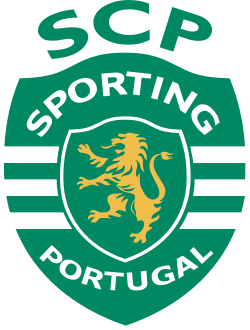

| Meccsek | Eredmény |
|---|---|
| Moreirense – Sporting CP: | 0–1 (Győzelem) |
| Sporting CP – Vitória de Setúbal | 3–1 (Győzelem) |
| Boavista – Sporting CP | 2–1 (Vereség) |
| Sporting CP – Gil Vicente | 3–0 (Győzelem) |
| Paços de Ferreira – Sporting CP | 4–0 (Vereség) |
| Sporting CP – Beira-Mar | 2–0 (Győzelem) |
| Belenenses – Sporting CP | 3–0 (Vereség) |
| Sporting CP – Marítimo | 2–1 (Győzelem) |
| Sporting CP – Académica | 1–0 (Győzelem) |
| Salgueiros – Sporting CP | 1–2 (Győzelem) |

2003-ban történt, hogy Sporting CP a Manchester United-dal mérkőzött meg. Ekkor még nem tudta, de ez volt Ronaldo legfontosabb meccse, annak ellenére, hogy barátságos. A vörös ördögök egy egyszerű győzelemre számítottak, de volt valaki, akitől valahogy nem tudták elvenni a labdát. Ez az ember Cristiano Ronaldo volt, a védők sorra hagyta hátra, a próbálkozásai sajnos nem voltak elegek, kikapott a Sporting CP 3-2-re. Hazafele menet Manchester United játékosok kérlelték akkori edzőjüket Sir Alexander Chapman Ferguson-t, hogy menten igazolja le az ifjú portugál játékost. Az edzőnek nem kellett sok noszogatás, gyorsan beadta derekát.